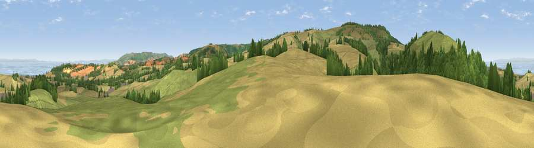

Viewpoint near Withycombe
#1997 in England · top 11% of its area beats it · near WithycombeThe view, rendered

A 360° render of this exact spot computed from the terrain model, tree cover and land cover — summer colours, afternoon light, calibrated against photographs of famous viewpoints. Real trees, hedges and buildings will differ in detail.
The panorama
Grey silhouette: terrain skyline in each direction (720 bearings, Earth curvature and refraction included). Dashed green: skyline with trees (+15 m) and buildings (+8 m) as obstacles. Blue strip: how far the ground is visible on each bearing.
Where the view opens
Wedge length = distance to the farthest visible ground on that bearing (vegetation-aware). Rings at 10, 25 and 50 km.
What fills the view
41% grassland · 31% cropland · 21% woodland · 6% water
Angular shares of the visible panorama (visual magnitude), not map area. Landscape diversity 0.54 (0–1 Shannon).
Key numbers
More beautiful places nearby
The staircase of upgrades: each row has a higher view potential than everything closer. Driving times are estimates from straight-line distance, calibrated against real road routing — check an actual route before setting out.
| Place | Direction | Drive | Score |
|---|---|---|---|
| Viewpoint near Withycombe | WNW · 1 km | ~3 min | 83.2 |
| Withycombe Hill | WNW · 2 km | ~4 min | 85.5 |
| Viewpoint near Minehead | NW · 9 km | ~19 min | 86.2 |
| North Hill | NW · 10 km | ~19 min | 86.3 |
| Viewpoint near West Quantoxhead | E · 10 km | ~20 min | 88.7 |
| Holdstone Hill | W · 40 km | ~60 min | 90.2 |
| The Knoll | SE · 74 km | ~98 min | 91.0 |
51.15786, -3.40757 · source: screening · position refined by local search. Computed location — check access rights before visiting.